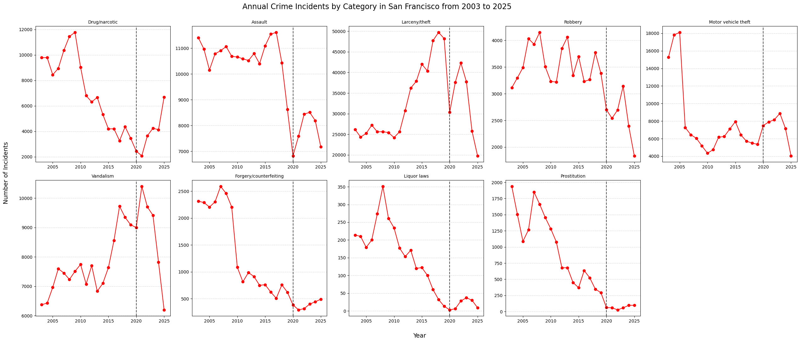

San Francisco is currently undergoing a fentanyl crisis, as many other cities in the United States. A crime data analysis revealed that drug crimes in the city have peaked before and that the issue was mitigated. Could previous data on drug related crimes be relevant to fight this new epidemic?
Every crime leaves a paper trail. For over two decades, San Francisco's Police Department has been quietly logging each one: the what, the where, the when. We took that trail and followed it all the way back to 2003.
Two separate datasets, published openly on SF OpenData, cover this span. We stitched them together into a single continuous record (aligned on crime category, date, time, year, week day, police district, and coordinates) so the story could be told without gaps.
The data spans from over 32 categories between the 2 datasets. However, to ensure consistency across the entire timeline, we focused our analysis on the 9 categories that are present in both datasets.
Geographically, the city is divided into 10 police districts. Each has its own character, and its own relationship with the drug crisis.
The COVID-19 pandemic was a global event that disrupted many aspects of life, including crime patterns. In San Francisco, most of the crimes showed a similar behaviour: a significant drop during the pandemic years (2020 and 2021) followed by a sharp increase in 2022 and 2023, returning to pre-pandemic levels. However, drug/narcotics crimes did not follow this pattern. Instead, they showed a relentless increase throughout the years, with no signs of slowing down even during the pandemic.

The behaviour of drug crimes after the pandemic is not an isolated case. In fact, drug crimes have been increasing since 2018, with a sharper increase in 2024 and 2025. This pattern is in line with the current fentanyl crisis in the city, which has been worsening since 2023. However, we can observe the data suggests that the drug crime epidemic in San Francisco is not a new issue. Between 2008 and 2010 there was a similar peak in drug crimes, which was mitigated in the following years. This raises the question: Could the data from the previous epidemic be similar to the current one (geographically and temporally), so it can help mitigate the crisis?
A lot can be learnt from the past and we believe the fight against drug crime in San Francisco is one of those situations. The two peaks in drug-related incidents in the city were compared to understand two main questions: where do these crimes happen and when?
For a given year, we divided the number of drug offenses in a district by the average number of drug offenses across all districts that year. This approach allows us to see, within each year, which districts have above-average crime levels relative to others (Figure 2).
Scrolling to the year of 2009, the most affected districts were Tenderloin, Southern and Mission, being the only districts above the year's average. In 2024 and 2025 only the same three had ratios higher than 1, being clearly the most affected. It is also evident that these three districts consistently have higher crime levels than the rest of the city for almost every year, even when drug crime occurences were not very high. A difference between the first peak around 2009 and the current one is that in the present the drug crimes seem to be more concentrated in Tenderloin than in Mission and Southern.
The frequency of these incidents varies across hours and weekdays and similar to the figure above we can see that change over the years in Figure 3.
Looking at the 2009 frame, the crimes were mostly commited between 10h and 20h. This is a consistent pattern across years with some years spreading a bit more to after 20h, which can be seen in 2024. Regarding the weekday, most crimes occur around Tuesday, Wednesday and Thursday, another pattern that is repeated along the years.
From the previous section, we can see that in 2009 and today, the patterns are the same. In fact, these patterns are also present in other years. Drug offenses happen in the same places and at the same times. At first, the lack of difference between the years when drug crimes peaked and the years they did not might make the analysis seem inconclusive, but it actually uncovers a major issue. The consistency in where and when these incidents occur points to underlying structural vulnerabilities in these neighborhoods.
So back in the day, the problem was heroin, now it is fentanyl and in the next decade it could be a new drug. And why? Because solving this issue requires addressing the root problem: the high susceptibility of these areas. Fighting the fentanyl epidemic in San Francisco should not be just about fentanyl or drugs, it should be about tackling the social and economic challenges that make these neighborhoods vulnerable. Measures against drugs are important, but the focus should be mainly on improving the social and economic conditions in these areas.
It is important to keep in mind that the number of drug related crimes is many often related to stricter policies and more policing and that the analysis did not reveal potential traces of measures taken back in 2010. However, the numbers still brought up a systematic issue in the San Francisco city whose mitigation could lead to a more sustainable fight to drug related crimes.